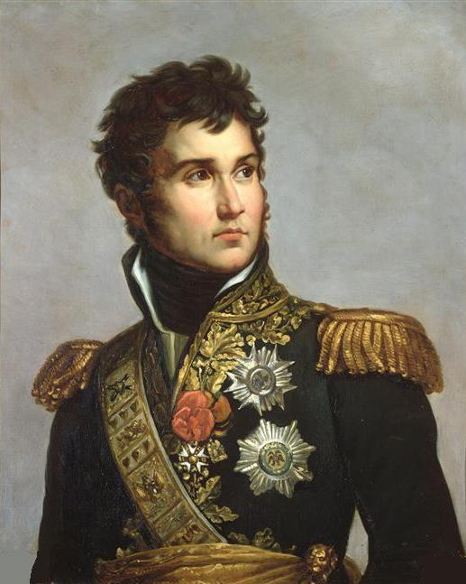
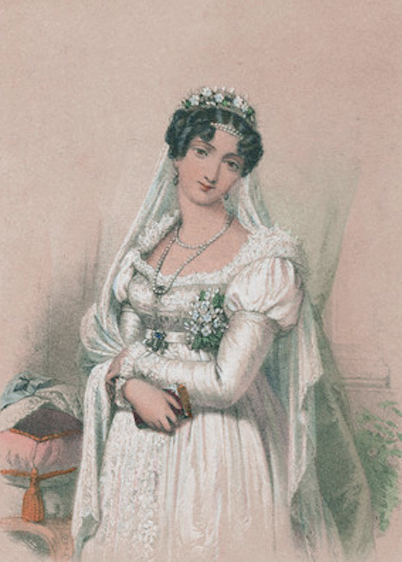
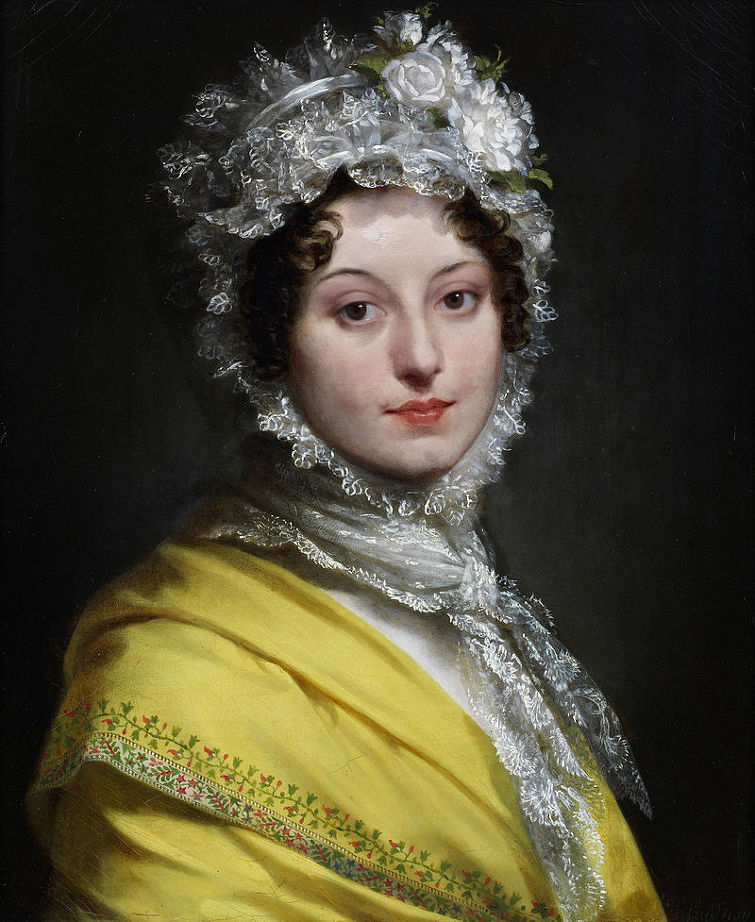

열혈남아의 사랑과 전쟁 - 장 란(Jean Lannes)의 여인들
게시: 2018-04-25T10:25:55+09:00

무협지나 소년 만화를 보면 열혈남아에게는 반드시 꽃미녀가 1명 이상 따라 붙게 되어 있고, 주인공 열혈남아는 아무리 주변의 유혹이 강해도 그 뜨거운 심장을 청순가련한 그녀에게만 바치지요. 실제로도 그럴까요 ? 역사상 실존하는 열혈남아 중 2번째라면 서러워할 프랑스군 원수이자 나폴레옹의 개인적 친구인 장 란(Jean Lannes)의 경우를 통해 살펴보시지요.
1793년 12월 25일 부상당한 몸을 이끌고 피레네 산맥 인근 빌롱그(Villelongue)를 탈환한 공으로 24세의 젊은 나이에 소령으로 승진한 란은, 군의관으로 명령으로 후방인 항구 도시 페르피냥(Perpignan)으로 휴양을 떠나게 됩니다. 이 곳에서 란은 꽤 번듯한 집을 가지고 있던 메릭(Meric)이라는 은행가의 집에 숙사 배정(billeting)을 받았습니다. 메릭가의 가장인 은행가는 이미 세상을 떠난 사람이었고, 이 집에는 남은 것이라고는 자존심 밖에 없던 미망인과 그 자식들 밖에 없었습니다.
(페르피냥 시내의 모습입니다.)
그 집의 마님이신 메릭 부인의 눈에는 지저분한 군복 차림에 말투와 행동도 거칠었던 란이 상대할 가치가 없는 촌뜨기로 보일 뿐이었습니다. 당시는 아직 혁명이 일어난지 불과 4~5년 밖에 경과되지 않았던 관계로, 농부나 날품팔이 등이 자기들끼리 위원이니 장군이니 하며 서로 추켜 세우는 모습들이 전통적인 귀족들과 부르조아의 눈에는 우습게 보였던 것이지요.
그러나 그 딸인 무척 활발하고 예쁜 19살짜리 아가씨 하나의 눈에는 어느 날 붕대를 감고 찾아온 이 우락부락하고 거친 상남자가 이야기 속의 기사나 용사 같은 것으로 보였습니다. 장 란은 꽃미남과는 거리가 먼, 작은 눈을 가진 평범한 얼굴의 사내였지만 누가 뭐라고 하든 24세의 약관의 나이에 스스로의 용기만으로 소령 계급까지 벼락 출세한 청년이었고, 나름 매력적인 사내였습니다. 이 아가씨의 정식 이름은 Jeanne-Josephine-Barbe, 보통 폴레트(Polette)라는 애칭으로 불렸습니다. 란도 이 폴레트라는 아가씨와 사랑에 빠집니다. 최소한 란은 그렇게 생각했습니다.
정작 란 본인이 정말 폴레트를 열렬히 사랑했는지는 좀 의심스럽습니다. 당시 분위기 상, 열혈남아라면 귀여운 아가씨를 애인으로 두고 있어야 폼이 났는데, 20세 초반이라 다소 철이 좀 덜 들었던 청년이었던 란도 벼락 출세한 자신의 지위에 걸맞는 장식품을 달아야 한다는 강박 관념 때문에 이 아가씨에게 열심히 구애를 했던 것일 수도 있습니다. 그런 의심이 드는 이유는 뭔가 진정성이 느껴지지 않기 때문입니다.
일단 폴레트에게는 란이 매력적인 '나쁜 남자'로 보였을지 몰라도, 메릭 부인의 눈에는 무식한 상 퀼로트(sans-culotte)일 뿐이었습니다. 란은 자신이 결코 농부 출신이 아니며 (이건 사실입니다. 란은 결국 염색공 일을 배우다 때려치우고 군에 입대했으니까요) 나름 괜찮은 집안 출신이라고 자신의 배경에 MSG를 좀 지나치게 많이 쳐서 떠벌였습니다. 자신의 무공을 잔뜩 과장해서 늘어놓는 것은 당연한 수순이었지요.
거짓말과 과장 어느 중간에 위치한 이런 떠벌임은 아가씨를 꼬시려는 젊은이들에게는 흔한 일이라고 할 수 있습니다. 그러나 부상이 많이 나아서 현역으로 복귀하고 나서의 행동은 다소 이해하기가 어렵습니다. 거의 1년 정도 폴레트에게 아무런 연락을 하지 않은 것입니다 ! 어쩌면 자신의 엉터리 맞춤법과 삐뚤삐뚤한 글씨가 창피해서 그랬을 수도 있지요. 1794년 12월이 되어 피레네 전선이 프랑스군의 완승으로 마무리되면서 할 일이 없어지자, 란은 뻔뻔스럽게도 마치 두고 온 물건을 찾으러 오듯 다시 폴레트에게 돌아갔습니다.
이번에는 좀더 말끔한 군복을 입고 오기는 했습니다만, 여전히 메릭 부인은 란 따위는 성에 차지 않는 사윗감이었습니다. 정상적인 시대였다면 부르조아 집안에서 허락하지 않는 결혼이 이루어졌을지 의문이지만, 당시는 혁명 직후 사회 혼란기여서 1795년 3월 15일 란과 폴레트는 나름 행복하게 결혼식을 올릴 수 있었습니다. 물론 메릭 부인과 폴레트의 오빠은 폴레트를 내놓은 자식으로 취급하고 이 결혼식에 불참했습니다.
처가 집에서는 대놓고 박대를 했으므로, 란 부부는 결혼식을 올리고 난 뒤 곧 란의 부대로 함께 복귀했습니다. 군 부대에 와이프를 데리고 가는 것은 당시로서는 결코 드문 일이 아니었습니다. 군 주둔지에는 병사들과 장교들, 그리고 그 가족들 뿐만 아니라 군에 필요한 식료품이나 자재를 공급하는 많은 상인들이 들락거렸고, 이런 군 병영은 그 자체가 꽤 큼지막한 마을 역할을 했습니다. 그리고 그런 마을에는, 아무리 다른 장교 및 병사들의 부인이 있다고 하더라도, 젊고 멀쑥한 중산층 출신의 부인은 꽤 희소가치가 있는 존재였습니다.
거기서 작은 문제가 발생했습니다. 이제 막 20세를 넘은 예쁜 용모의 란 부인은 그 병영의 장교들과 상인들로부터 폭발적인 인기를 누렸습니다. 그리고 평생 고향인 페르피냥 밖으로는 거의 나가보지 않았던 폴레트는 갑자기 인기가 폭발한 자신의 인기에 정신을 차리지 못했고, 자신에게 과도한 친절과 관심을 베푸는 뭇 남성들과 즐겁게 노닥거렸습니다. 물론 그렇게 노닥거리는 것이 불륜을 뜻하지는 않았고 또 란은 프랑스 대혁명의 인권 선언을 신봉하는 열혈 공화주의자였습니다만, 그런 와이프를 너그럽게 풀어 놓을 정도로 진보적인 남자는 아니었습니다. 몇 주 못 가 견디다 못한 란은 가기 싫어하는 폴레트를 처가댁으로 보내야만 했습니다.
하지만 무식한 상 퀼로트 따위와 결혼을 했다고 대놓고 구박하는 친정집은 폴레트에게 결코 편히 있을 곳이 아니었습니다. 전장에서 또 전공을 세우고 잠시 처가에 들린 란에게 폴레트는 아무 곳이라도 좋으니 여기서 눈칫밥 먹는 것만은 면하게 해달라고 매달렸지요. 이제 곧 북부 이탈리아 침공 작전에 나서게 될 란은 거친 전투 현장에 도저히 와이프를 데리고 갈 수가 없었습니다. 결국 이럴 때 기댈 곳이라는 고향의 가족 밖에 없었습니다. 란은 결국 폴레트를 렉투르(Lectoure)의 초라한 자기 고향집으로 데려갔습니다. 여기서 폴레트는 (대략 짐작은 했겠지만) 란이 떠벌이던 나름 잘 사는 집안이라던 란 가문의 실체를 보게 됩니다. 어쨌거나 란은 고향 집에서 폴레트가 시댁 식구들과 단란하게(?) 살도록 배려를 해준 뒤, 이탈리아 방면군으로 떠났습니다.
(렉투르 전경입니다. 뭐 나름 아름답습니다만, 항구 도시 페르피냥에 비하면 확실히 작네요.)
그 이후는 란에게는 정말 폭풍의 나날이었습니다. 나폴레옹과 처음 만나 드디어 인생의 기회를 잡은 것이니까요. 란은 거의 언제나 선두에서 나폴레옹의 롬바르디아 침공 작전을 이끌었습니다. 한번은 이미 두번이나 부상을 입고 야전 병원의 천막에 누워 있다가, 근처에서 들리는 포성을 듣고는 거의 조건반사적으로 일어나 군의관을 뿌리치고 홀로 전장으로 달려 갔습니다. 그 달려간 곳이 바로 아르콜레 다리의 치열한 전투 현장이었고, 여기서 란은 다시 한번 오스트리아군의 총탄을 얻어 맞고 뻗어 버립니다. 그럴 만한 가치가 있었습니다. 이미 란을 눈여겨 보던 나폴레옹은 여기서 란에게 완전히 꽂혀, 파리 총재 정부로 보내는 보고서에서도 란에 대해 칭찬을 늘어 놓았으니까요.
나폴레옹이 파리에 써대는 편지의 반의 반만이라도 란이 폴레트에게 연락을 보냈다면 좋았겠으나, 란은 굉장히 적은 수의 편지만을 집에 보냈습니다. 그나마 편지 내용은 온통 전투 이야기 뿐이었고, 폴레트에 대한 다정한 애정 표현 같은 것은 거의 없었습니다. 그야말로 '생사확인이나 하는' 수준이었지요.
란이 롬바르디아에서 역사를 쓰는 동안, 폴레트는 '란이 자랑했던 것보다 훨씬 더 옹색한' 란씨 집안에서 무척 불행한 생활을 이어가고 있었습니다. 폴레트의 고향인 페르피냥도 그다지 큰 도시는 아니었으나 란의 고향인 렉투르는 그야말로 시골이라서, 도시 여자였던 폴레트에게는 그야말로 따분하기 짝이 없는 곳이었습니다. 게다가 고상한 부르조아 아가씨였던 폴레트의 행동거지는 시골뜨기 란씨 집안에서는 험담 대상이 될 뿐이었습니다. 란은 가끔씩 오가는 편지를 통해서, 폴레트와 시댁 식구들의 불화를 진정시키려 노력했으나 큰 효과는 없었습니다. 전장에서 란은 두려운 것이 없었으나, 이런 와이프와 시댁 식구들 간의 싸움은 란이 감당할 수 있는 성질의 것이 아니었습니다.
란의 젊은 부인 폴레트가 시댁 식구들에게 미움 받은 이유 중 하나는 시댁 식구들을 무시하고 좁디 좁은 시골 마을인 렉투르에서 부르조아적인 사교 활동을 했다는 점이었습니다. 이건 당시 프랑스 중산층 사회에서 결코 스캔달이나 불륜 같은 것이 아니었습니다만, 시골 마을 렉투르에서는 보는 눈이 달랐습니다. 특히 란의 형이자 성직자였던 베르나르가 그런 공격에 앞장 섰는데, 그는 '남편이 머나먼 이국 땅에서 목숨을 걸고 조국을 위해 싸우느라 온갖 고생을 하고 있는데, 그 안사람은 시골 마을에서 퇴폐적임 모임을 가지고 시시덕거린다' 라고 비난했습니다.
실제로 란은 여러번 죽을 고비를 넘기며 조국을 위해서 싸우기는 했습니다만, 그냥 계속 고생만 하고 있는 것은 아니었습니다. 밀라노를 점령하고 난 뒤인 1796년 5월, 그는 프랑스군에 반기를 든 이탈리아 농민들로부터 파비아(Pavia)라는 작고 멋진 도시를 탈환하는 임무를 맡았는데, 이 임무야 당연히 순식간에 완수되었습니다. 그러나 란은 이 도시에 의외로 오래 머물렀는데, 이유는 자신의 사령부로 삼은 파비아 시내의 어느 부잣집 따님이 엄청난 미인이었기 떄문이었습니다. 다만 란은 난폭한 점령군처럼 '네 이년 수청을 들라'는 식의 무자비함을 보이지는 않았습니다. 27살짜리 젊은 대령이었던 란은 쭈삣쭈삣 이 아름다운 이탈리아 아가씨에게 접근했으나, 이 아가씨가 '실은 전 당신네들과 싸우다 부상당한 뒤 우리 집에서 치료를 받으며 친해진 오스트리아 장교와 사랑하는 사이랍니다'라고 고백을 하자 깨끗이 물러났다고 합니다.
그러나 란은 이탈리아 미녀들에 대한 열망을 쉽게 포기하지 않았습니다. 6월달에는 마사-카레라(Massa-Carrera)라는 곳에 도착해서는 펠리치아(Felizia) 부인이라는 유부녀에게 홀딱 반해버렸습니다. 그는 마침 펠리치아 집안에 숙사 배정을 받은 자기 부대의 보급관이자 친구이던 알베르 페르몽(Albert Permon)에게 그 여자에게 반했으며, 어떻게든 유혹해내겠다고 털어놓고 조언을 구했습니다. 그러나 란의 애정운은 그다지 좋지 않았습니다. 이 페르몽이라는 친구는 이탈리아어에 능숙했을 뿐만 아니라 노래까지 잘 불렀고, 란 못지 않게 혈기 왕성한 수컷이었던 것입니다. 펠리치아 부인은 란이 본격적으로 작전을 펼치기도 전에 그만 페르몽에게 넘어가버렸고, 이 두 불륜남녀는 그 늙은 남편을 피해 인근 도시 리보르노(Livorno)로 사랑의 야반도주를 해버렸습니다. 와이프를 빼앗긴 남편은 이 프랑스군 부대의 지휘관인 란을 찾아가 와이프를 찾아달라고 호소했는데, 어쩐지 자신보다 이 프랑스군 지휘관이 더 화가 났다고 느꼈을 것입니다. 란은 연대 병력을 이끌고 다음날 아침 당장 대대적인 추격전을 펼쳤고, 어느 때보다 열정적으로 추격 및 수색을 한 결과, 그날 밤이 가기 전에 두 년놈들을 잡아들였습니다.
이렇게 전혀 영광스럽지 않은 이야기까지 전해져 내려온 것은 저 불륜 이야기의 주인공인 알베르 페르몽의 예쁜 여동생 덕분이었습니다. 그 여동생의 이름은 마르텡 드 페르몽(Martin de Permon, 혹은 Permond)으로서, 훗날 나폴레옹의 부하인 장 안도슈 쥐노(Jean-Andoche Junot)와 결혼하면서 로르 쥐노(Laure Junot)로 알려진 당대의 유명 사교계 인사였습니다. 이 여자는 특히 나폴레옹 몰락 후 온갖 뒷담화로 가득한 나폴레옹 관련 회고록을 썼기 때문인데, 로르 쥐노에 따르면 이 사건 때 자기 오빠 알베르는 다른 부대로 전출되었고, 남편 펠리치아보다 분노에 가득찬 란을 더 무서워했다고 합니다.

(쥐노의 와이프인 로르 쥐노입니다. 아름답고 활기 넘치는 것으로 유명했던 그녀는 회고록에서 나폴레옹이 자기에게도 집적거렸다고 썼습니다.)
모르긴 해도, 이탈리아의 미녀들에 대한 란의 모험이 이렇게 다 실패로만 끝나지는 않았을 것 같습니다. 그래서였는지, 결국 고향 렉투르에서 시댁 식구들과 신경전을 벌이고 있던 폴레트의 귀에까지 뭔가 소문이 들어갔던 모양입니다. 1797년 4월 마침내 오스트리아가 레오벤(Leoben) 조약을 통해 나폴레옹에게 굴복한 뒤 란을 비롯한 나폴레옹 일행은 밀라노 인근 몸벨로(Mombello)에 꽤 화려한 사령부를 차려 놓고 잦은 연회와 무도회를 가지며 승리를 만끽하고 있었는데, 이때 란에게 폴레트의 분노에 찬 편지가 날아온 것입니다. 폴레트는 이 편지에서 란의 불륜과 외도를 맹비난하며 공격했고, 란은 전장에서와는 달리 이 공격에 어쩔 줄 몰라하며 안절부절 하다가 마침내 병을 얻어 정말로 드러 누워버렸습니다. 란은 평소와는 달리 끙끙대며 폴레트에게 '아 그게 아니고요...'라는 식의 편지를 연달아 보내며 와이프를 달래려 노력했고, 나폴레옹에게 '심각한 가정 문제의 해결'을 위해 고향으로 갈 수 있도록 휴가를 요청하기도 했습니다.
결국 폴레트는 란의 사탕발림 편지에 이끌려 몸벨로의 프랑스군 사령부를 찾아왔고, 란은 오랜만에 보는 와이프에게 온갖 장신구와 화려한 드레스 등의 선물로 융단 폭격을 가하며 전세 회복을 꾀했습니다. 이 작전은 성공했습니다 ! 화려한 몸벨로의 사령부는 렉투르의 구질구질함에 질려 있던 폴레트를 크게 만족시켰고, 란이 합법적/불법적으로 구해 바친 금은보석들은 폴레트를 귀부인으로 만들어주었습니다. 하긴 프랑스 이탈리아 방면군 소속 장군의 와이프라면 귀부인이지요. 일주일간 남편과 행복한 시간을 보낸 폴레트는 올 때보다 크게 무거워진 가방을 들고 웃는 얼굴로 렉투르로 돌아갔습니다.
그러나 결국 이런 아슬아슬한 결혼 관계는 오래 가지 못 했습니다. 기본적으로 군인이라는 직업상, 란과 폴레트는 너무 자주, 너무 오래 떨어져 지내야 했습니다. 물론 다부처럼 그렇게 떨어져 지내면서도 다른 사람들이 살짝 감동할 정도로 부인과 애특한 애정을 이어간 사람도 있으니, 그저 직업 탓만 하기는 좀 그렇습니다. 그러나 란도 폴레트도 상당히 어린 나이에 다소 철없이 결혼한데다, 란이 그다지 다정다감한 가정적인 인물도 아니었던지라, 적대적인 시댁 식구들에게 둘러싸인 폴레트도 쉽게 유혹에 흔들렸을 것 같기는 합니다.
이들의 결혼이 파탄난 것은 란이 나폴레옹을 따라 이집트에 간 것이 결정적이었습니다. 앞서 소개해드렸다시피, 1799년 5월 란은 아크레 포위전에서 무너진 성벽을 향해 언제나처럼 앞장서 돌격해 들어가다 적탄에 목이 꿰뚫리는 중상을 입었고, 많은 이들이 란이 전사했다고 생각했습니다. 아부키르 해전에서 넬슨에게 함대를 잃고 낙동강 오리알 신세가 되었던 프랑스군은 본국과의 연락이 뚝 끊긴 상태였는데, 용케 가끔씩 선박을 통해 본국과 연락이 닿기는 했습니다. 그런데, 신기할 정도로 오는 소식이나 가는 소식이나 매우 우울한 소식만 지중해를 건널 수 있었습니다. 어쩌면 영국 해군이 일부러 안 좋은 소식만 통과시켰을 수도 있지요. 아무튼 프랑스에는 란 장군이 아크레에서 전사했다는 소식이 7월에 전해졌고, 이 소식은 자나깨나 자식 걱정 뿐이던 란의 어머니 세실이 심장마비로 사망하는 직접적인 원인이 되버립니다. 이에 비해 란의 전사 소문을 들은 폴레트는 국방부에 편지를 써 남편의 전사로 인한 연금 수령이 가능한지 문의를 했다고 합니다.
비슷한 시기, 란도 고향에 대해 매우 안 좋은 소식을 접하고 있었습니다. 아직 어머니의 사망 소식은 접하지 못했지만, 그해 2월 폴레트가 아들을 낳았다는 소식이 날아든 것입니다. 란이 출항한 것이 1년 전 5월이었으므로, 어떻게 생각하면 그 아이는 란의 아이일 수도 있었습니다. 그러나 란은 당시 리옹과 툴롱 등지에서 출정 준비를 하느라 3월부터 매우 바쁜 나날을 보내고 있었으므로, 그때 폴레트를 만났을 것 같지는 않았습니다. 그 아이가 자신의 아이인지 어떤지는 사실 란 본인과 폴레트 당사자들만이 아는 사정일텐데, 확실한 건 란 본인은 폴레트의 출산 소식을 듣고 매우 화를 내고 침울해 했다는 것입니다.
아니나 다를까, 나폴레옹이 이집트 원정군을 내팽개치다시피 버려두고 란을 비롯한 소수의 심복 부하들만 데리고 프랑스로 돌아와 쿠데타를 성공시키자마자, 란은 '불륜'을 이유로 이혼 소송에 들어갔습니다. 귀국한 이후 폴레트와 그 아이는 전혀 만나지 않았지요. 폴레트의 태도는 남편이 머나먼 이국 땅에서 조국을 위해 목숨을 걸고 싸우는 사이 바람을 피워 애까지 낳은 불륜녀의 것이 아니었습니다. 그녀는 변호사들이 '신군부의 잘 나가는 장군'과 맞서야 한다는 부담에 다들 꼬리를 빼는 와중에도 꿋꿋이 그 아이는 란의 아이이며 자신은 아무 불륜도 저지른 바 없다고 떳떳 또는 뻔뻔하게 나섰습니다.
란이 필요한 것은 자신의 억울한 심정 외에도, 자신이 작년 4~5월 사이에 폴레트를 만나지 않았다는 것을 입증해줄 증인이었는데, 사실 그에 대한 증인을 내세우는 것은 다소 어려운 일이었습니다. 결국 란은 자신의 친구이자 당시 프랑스에서 가장 큰 권력을 가진 사람, 즉 제1통령인 나폴레옹 보나파르트에게 부탁하여 당시 란이 폴레트를 만난 일이 없다라는 증언을 서면으로 받아내려 했습니다. 그러나 란의 거듭된 부탁에 시달리던 나폴레옹이 마지 못해 써준 증언서의 내용은 매우 간단 명료하면서도 란의 '순결'을 입증할 수준은 아니었습니다. 즉, "장 란은 몇몇 특별 임무를 수행하기 위해 떠났을 때를 제외하고는 1798년 5월 중순까지 툴롱에 머무르며 보나파르트의 참모 역할을 수행했다"라는 것이었지요. 란은 좀더 확실한 증언서를 써달라고 나폴레옹은 졸라댔습니다만, 나폴레옹이 허용한 것은 여기까지였습니다. 결국 이혼 소송은 다소 난항을 겪으며 삐걱대다, 란이 30여명의 증인을 내세우고 법무장관에게 강력한 편지를 연달아 보내는 등 대소동을 벌인 끝에야 마무리 되었습니다. 그럼에도 불구하고 란은 폴레트가 낳은 아이를 자신의 상속자 목록에서 지우지 않음으로써 많은 여운을 남겼습니다. 과연 그 아이는 란의 아이였을까요, 불륜의 결과였을까요 ? 본인들만 알겠지요.
란은 나폴레옹의 배려로 비교적 빨리 재혼을 했습니다. 이혼 한지 대략 1년 후인 1800년 마렝고 전투 이후, 나폴레옹은 자신의 심복 부하들이 제대로 된 귀족 흉내를 내려면 근사한 결혼을 해야 한다고 판단을 내리고는, 어느 중급 공무원의 아름답고 교양 있는 18살짜리 딸을 란의 배필로 중매를 서주었습니다. 란은 자신의 친구 2명, 즉 베시에르(Jean-Baptiste Bessieres, 예 나중에 계급으로도 관계에서도 원수가 되는 그 베시에르입니다. 이때까지만 해도 베시에르와 란은 꽤 친한 사이였습니다.)와 프레르(Georges Frere)를 보내 이 아가씨를 미리 만나보도록 했습니다. 그리고는 물어보았지요.
"예쁘냐 ?"

(란의 두번째 부인, 루이즈 앙투아네트 게누엑입니다.)
그 대답이 "응 예쁘더라"였기 때문에, 란은 이 결혼에 응했습니다. 이름이 루이즈(Louise-Antoinette Guehenuec)였던 이 아가씨는 확실히 란에게는 딱 어울리는 조신하고 교양 있고 아름다운 부인이었습니다. 루이즈의 가치는 나중에 란이 포르투갈에 전권 대사로 부임했을 때였는데, 당시 란은 영국 대사였던 피츠제랄드(Lord Robert Stephen Fitzgerald)와 맞대결을 해야 했는데, 그런 외교 대결에서 란과 루이즈는 환상의 팀이었습니다. 란이 거침없고 난폭한 언행으로 포르투갈 섭정공 조아오 6세(João VI)을 윽박지르면 그 와이프인 루이즈가 파티 석상에서 그 우아함과 교양으로 포르투갈 귀족들의 호감을 사는 형식이었지요. 특히 피츠제랄드의 부인은 외모도 영 아니었는데, 거기에 교양과 눈치와 예의범절까지 없어 상대가 되지 않았습니다.
그러나 그렇다고 란이 남자들이 바라는 그런 이상적인 와이프는 아니었습니다. 루이즈는 자녀들을 데리고 남편의 고향이자 시댁이 있는 렉투르를 방문하는 것을 거부했습니다. 너무 멀고, 너무 시골이고 가봐야 할 일도 없으니 당신 혼자 가보라는 것이었지요. 그러나 자기 친정집을 위해 마른(Marne) 강가에 남편의 재물로 새로 마련한 샤또에는 남편을 데려갔습니다. 여기는 가깝고, 아름답고, 또 자기 가족과 친구들이 있었으니까요. 란은 제4차 대불 동맹 전쟁 중인 풀투스크 전투에서 적탄에 부상을 입고도 루이즈가 걱정할까봐 편지에 자신의 부상 이야기를 적지 않았습니다. 그러나 나중에 란이 아스페른-에슬링 전투에서 전사해버리자, 루이즈는 생전에 남편에게 주어졌으나 남편이 웃기지도 않는다며 받아들이지 않았던 시브르 대공(Prince de Sievres)의 영지인 폴란드 지에비어츠(Siewiercz) 땅의 세수를 자기가 받을 수 있는지 나폴레옹에게 문의했다고 합니다. 나폴레옹은 거절했고요.
원래부터 루이즈는 나폴레옹을 좋아하는 편이 아니었는데, 나폴레옹이 오스트리아의 공주 마리-루이즈와 재혼을 하자 마리-루이즈의 친구로서 도움을 주는 궁정 레이디(dame d'honneur, 영어로 lady of honour)의 역할을 기쁜 마음으로 맡았다고 합니다. 나폴레옹으로서는 아끼는 친구의 미망인에게 은혜를 베푼 셈이었으나, 정작 루이즈는 자신을 진짜 친구로 여기는 마리-루이즈와 나폴레옹의 사이가 벌어지는데 큰 역할을 했습니다. 아울러, 나중에 나폴레옹이 패망하여 퇴위하자 재빨리 부르봉 왕가 편에 붙었고, 웰링턴 공작이 파리에 들어왔을 때는 자신의 집을 영국군 사령부로 쓰라고 내주기도 했다고 합니다. 특히 나중에 세 아들 중 둘은 영국 여자와 결혼시켰고, 하나는 망명 귀족과 결혼을 시켰습니다. 란이 생전에 가장 증오하던 대상이 바로 부르봉 왕가와 영국인들과 망명 귀족이었는데, 아마 란은 무덤에서 여러 번 뒤척거렸을 것 같습니다.
출처 : Margaret Chrisawn의 'Emperor's Friend'